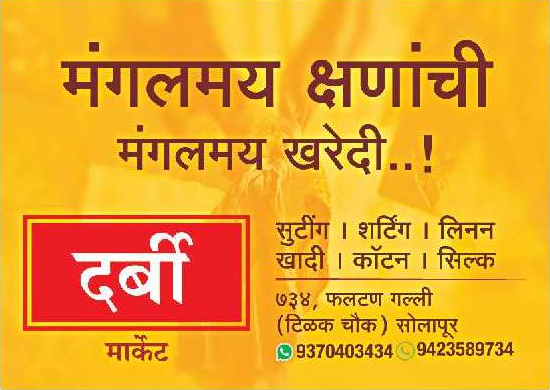

|  |
|
माझा महाराष्ट्र |

|
Solapur * Date:Wednesday, 17 April 2024 || सोलापूर * तारीख:बुधवार, 17 एप्रिल 2024 || www.emajhamaharastra.co.in || किंमत:5 रुपये
सोलापुरात भाजपचे राम सातपुते उमेदवार; प्रणिती शिंदेंचे आव्हान पेलणार ?दोन युवा आमदारांमध्ये लढत...सोलापूर : सोलापूर लोकसभा राखीव मतदारसंघात सत्ताधारी भाजपचा उमेदवार कोण, याची उत्सुकता अखेर संपली असून माळशिरसचे आमदार राम सातपुते यांना उमेदवारी मिळाली आहे. त्यांच्या रूपाने भाजपकडून काँग्रेसच्या आमदार प्रणिती शिंदे यांना तगडे आव्हान देण्यात आल्याचे स्पष्ट झाले आहे. सोलापुरात भाजपच्या उमेदवारीसाठी मोठी भाऊगर्दी झाली होती. परंतु यात अखेर आमदार राम सातपुते यांच्या गळ्यात उमेदवारीची माळ पडली आहे. अवघ्या ३४ वर्षांचे सातपुते हे संघातून तयार झालेले आणि अखिल भारतीय विद्यार्थी परिषदेतून वाढले तरूण नेते आहेत. मूळ बीड जिल्ह्यातील डोईठाण (ता. आष्टी) येथील रहिवासी असलेले सातपुते हे अ. भा. विद्यार्थी परिषदेचे प्रदेश मंत्री आणि भारतीय जनता युवा मोर्च्याचे प्रदेश उपाध्यक्षपद सांभाळत असताना मागील २०१९ सालच्या विधानसभा निवडणुकीत भाजपने त्यांना माळशिरस राखीव मतदारसंघातून निवडून आणण्याची जबाबदारी ज्येष्ठ नेते विजयसिंह मोहिते-पाटील यांच्यावर सोपविली होती. 
सोलापूर लोकसभेसाठी त्यांचेच नाव आघाडीवर होते. याशिवाय प्रसिद्ध उद्योजक तथा दलित चेंबर ऑफ काॅमर्स ॲन्ड इंडस्ट्रीजचे संस्थापक-अध्यक्ष, पद्मश्री मिलिंद कांबळे यांचेही नाव संभाव्य उमेदवार म्हणून चर्चेत होते. परंतु काँग्रेसच्या उमेदवार आमदार प्रणिती शिंदे यांचे आव्हान परतवून लावण्याच्या अनुषंगाने भाजपने विचारपूर्वक आमदार राम सातपुते यांना उमेदवारी दिली आहे. त्यामुळे आता सोलापुरात आमदार प्रणिती शिंदे आणि आमदार राम सातपुते यांच्यात थेट लढत होण्याची अपेक्षा आहे.मागील २०१४ आणि २०१९ सालच्या सोलापूरच्या लोकसभा निवडणुकीत काँग्रेसचे ज्येष्ठ नेते सुशीलकुमार शिंदे यांना सलग दोनवेळा पराभव पत्करावा लागला होता. वडिलांच्या पराभवाची सल कन्या म्हणून आमदार प्रणिती शिंदे यांच्या मनात आहे. यंदाच्या लोकसभा लढतीत त्या आपल्या वडिलांच्या पराभवाचा वचपा काढणार की भाजपच पुन्हा विजयाची हॕट्रिक साधणार, याचे उत्तर या लढतीतून मिळणार आहे. |
राम नवमीला प्रभू रामललाच्या कपाळावर पडतील सूर्यकिरणे, 5 मिनिटाचा अविस्मरणीय क्षणराम नवमी: श्री रामलला मंदिरात दर्शनासाठी येणाऱ्या भाविकांना रामनवमीला रात्री ११ वाजेपर्यंत दर्शन घेता येणार आहे. श्री रामजन्मभूमी तीर्थ क्षेत्राचे सरचिटणीस चंपत राय यांनी ही माहिती दिली आहे. श्री रामनवमीला मंगला आरतीनंतर अभिषेक, शृंगार आणि दर्शन ब्रह्म मुहूर्तावर पहाटे साडेतीन वाजल्यापासून मंदिर सुरू राहणार असल्याचे त्यांनी सांगितले. पहाटे ५:३० वाजता शृंगार आरती होईल, श्री रामललाचे दर्शन व सर्व पूजाविधी एकाच वेळी सुरू राहतील. 
देवाला नैवेद्य अर्पण करण्यासाठी वेळोवेळी अल्प कालावधीसाठी पडदा असेल. रात्री 11:00 वाजेपर्यंत दर्शन सुरू राहील, त्यानंतर प्रसंगानुसार भोग आणि शयन आरती केली जाईल.
रामनवमीच्या शयन आरतीनंतर मंदिरातून बाहेर पडताना प्रसादाची सोय केली जाणार आहे. असे तीर्थक्षेत्रातून सांगण्यात आलेय. भाविकांनी त्यांचे मोबाईल फोन, शूज, मोठ्या पिशव्या आणि प्रतिबंधित वस्तू इत्यादी मंदिरापासून सुरक्षितपणे दूर ठेवाव्यात. |
कोण जिंकणार सोलापूर लोकसभा ? कोण होणार सोलापूरचा खासदार? 17 एप्रिल 2024 योगेश जाधव(YoYo) |
सोलापूरात महायुती आघाडीवर, माढ्यात काय? महाराष्ट्रातील हायव्होल्टेज मतदारसंघांचा सर्वात मोठा सर्व्हे!देशभरात लोकसभा निवडणुकीची धामधूम सुरु आहे. पहिल्या टप्प्यातील मतदान 17 एप्रिलला पार पडणार आहे. तर 7 मे रोजी माढा, कोल्हापूर आणि सोलापूर या लोकसभा मतदारसंघासाठी मतदान पार पडणार आहे. दरम्यान, एबीपी माझा आणि सी व्होटर्सने देशभरातील जागांचा कल जाणून घेतलाय. महाराष्ट्रातील माढा, कोल्हापूर आणि सोलापूर लोकसभेच्या जागेवर कोणाचा विजय होऊ शकतो किंवा कोणाला आघाडी मिळू शकतो? घेऊयात... सोलापुरात प्रणिती शिंदेंना धक्का?सोलापूर लोकसभा मतदारसंघातून काँग्रेसने प्रणिती शिंदे यांना उमेदवारी दिली होती. तर प्रणिती शिंदे यांच्या विरोधात भाजपने राम सातपुते यांना मैदानात उतरवले होते. प्रणिती शिंदे यांनी राम सातपुते यांना उमेदवारी जाहीर झाल्यानंतर ते उपरे असल्याचा मुद्दा समोर आणला होता. त्यानंतर पुढे दोन्ही उमेदवार विकासाच्या मुद्द्यावरही बोलू लागलेत. मात्र, सोलापूर लोकसभा मतदारसंघातून इंडिया आघाडीला मोठा धक्का बसू शकतो. या जागेवरुन राम सातपुते यांना विजय मिळण्याची शक्यता ओपिनियन पोलमधून व्यक्त करण्यात येत आहे.माढामध्ये धैर्यशील मोहितेंच्या विजयाची शक्यतामाढा लोकसभा मतदारसंघात नुकतेच शरद पवारांच्या राष्ट्रवादी काँग्रेसमध्ये प्रवेश केलेल्या धैर्यशील मोहिते पाटलांचा विजय होऊ शकतो, असा कल एबीपी आणि सीव्होटर्सच्या सर्व्हेतून व्यक्त केला जात आहे. माढा लोकसभा मतदारसंघामध्ये भाजपने रणजितसिंह नाईक निंबाळकर यांना उमेदवारी दिली आहे. तर शरद पवारांनी निंबाळकरांविरोधात धैर्यशील मोहितेंना उतरवले आहे. दरम्यान, या निवडणुकीत मोहिते पाटील घराणाने साथ सोडल्याने भाजपला मोठा फटका बसण्याची शक्यता आहे. घरचा कारभारी नीट असेल तर घरचा कारभार नीट होतो अशी टीका, धैर्यशील मोहिते पाटलांनी निंबाळकर यांच्याविरोधात शड्डू ठोकलाय. धैर्यशील मोहितेंना या मतदारसंघातून मोठे यश मिळण्याची शक्यता सर्वेमधून व्यक्त केली जात आहे. |
सलमान खानच्या घरावरील हल्ल्याचा कट महिन्याभरापूर्वीच?
बॉलिवूड अभिनेता सलमान खानच्या घरावर रविवारी पहाटे दोन हल्लाखोरांनी गोळीबार केला. या घटनेनंतर एकच खळबळ उडाली. या प्रकरणाचा तपास दिल्ली पोलीस आणि केंद्रीय तपास यंत्रणांकडे सोपवण्यात आला आहे. या प्रकरणात मोठी अपडेट समोर आली असून सलमान खानच्या घरावर करण्यात आलेल्या गोळीबाराचा कट एक महिन्याभरापूर्वीच रचण्यात आला होता, अशी माहिती सूत्रांनी दिली तर हा कट भारतात नाही तर अमेरिकेत रचला गेला. रविवारी पहाटे ४.५० वाजता बाईकवरून आलेल्या अज्ञात हल्लेखोरांनी सलमानच्या गॅलेक्सी अपार्टमेंटबाहेर गोळीबार केला. लॉरेन्स बिश्नोईचा भाऊ अनमोल बिश्नोई याने या प्रकरणाची जबाबदारी घेतली आहे. अनमोल बिश्नोई याने फायरिंगची जबाबदारी रोहित गोदारा याच्याकडे सोपवली होती. गोदारा याच्याकडे 12 पेक्षाही जास्त प्रोफेशनल शूटर्स असल्याने त्याच्याकडे जबाबदारी सोपवण्यात आली होती, तर अनमोल बिश्नोई नावाच्या अकाऊंटवरून या गोळीबाराची जबाबदारी स्वीकारण्यात आली होती, अशीही माहिती सूत्रांकडून मिळत आहे. |